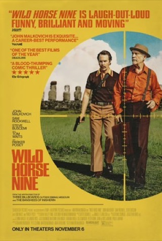

Wild Horse Nine
- Directed by
- Martin McDonagh
- Country
- USA / Chile
- Year
- 2026
- Running time
- 105 minutes
- Language
- English
- Premiere
- West Coast Premiere
- With
- Ailin Salas, John Malkovich, Mariana Di Girolamo, Parker Posey, Sam Rockwell, Steve Buscemi
- Guests
- Martin McDonagh Director, Sam Rockwell Actor, Mariana Di Girolamo Actor, Parker Posey Actor, Sarah Finn Casting Director, Moderator
Source: Festival website programme (MVFF49): Wayback Machine copy; Festival film page: Wayback Machine copy; Poster from English Wikipedia (non-free file)